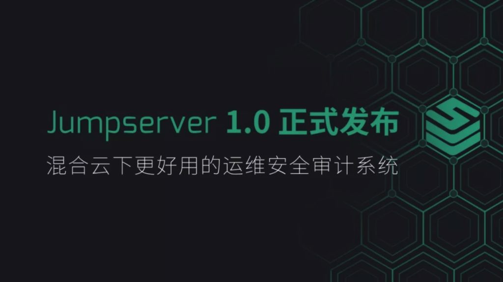
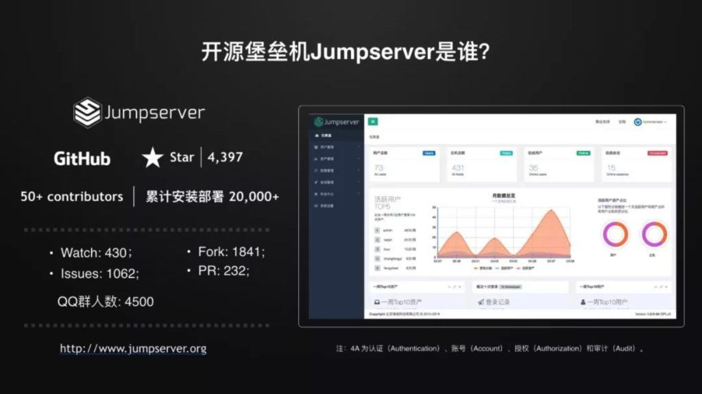
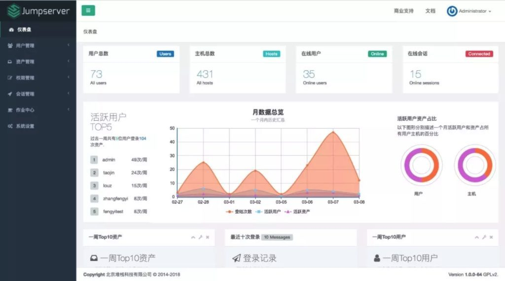
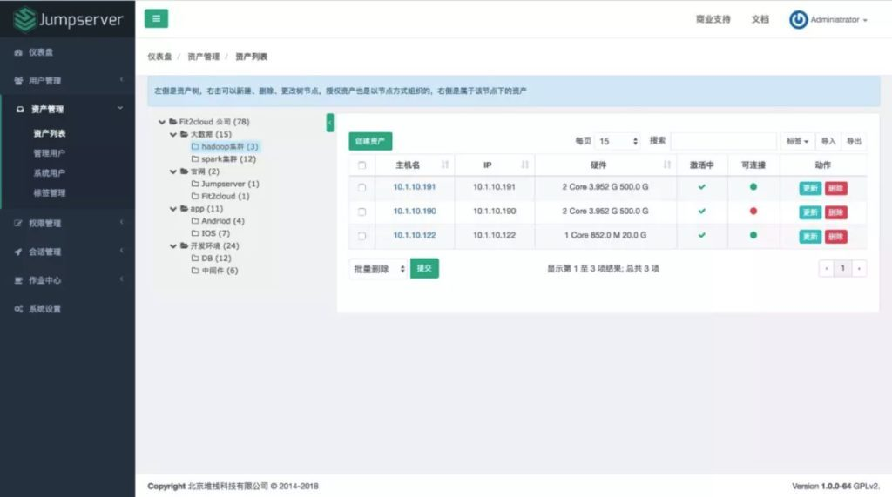
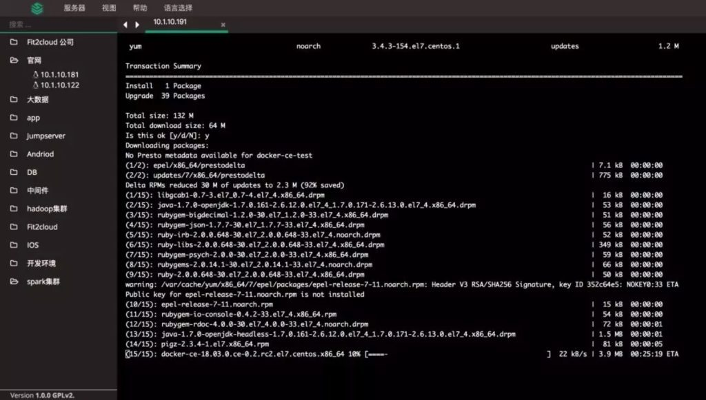
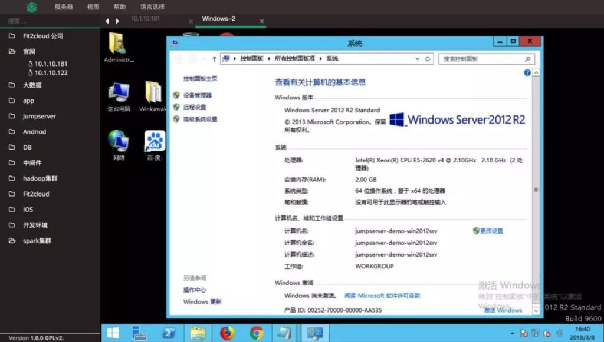

3月15日，中国领先的混合云管理平台及服务提供商FIT2CLOUD（飞致云）旗下成员Jumpserver开源堡垒机正式发布首个里程碑版本——Jumpserver 1.0。Jumpserver 1.0是完全开源、符合4A规范（包含认证Authentication、账号Account、授权Authorization和审计Audit）的运维安全审计系统。Jumpserver核心开发团队表示，Jumpserver 1.0全面支持分布式部署，致力于向企业级客户交付混合云下更好用的开源堡垒机（跳板机）。

作为源自中国的明星开源项目，Jumpserver（www.jumpserver.org）初创于2014年，基于GPL v2.0开源许可协议。经过了四年的社区研发，以及基于企业反馈的持续功能改进，Jumpserver项目目前在软件托管平台Github上拥有4,397个Star（截止至2018年3月12日），累计安装部署超过20,000次。2017年11月，Jumpserver开源堡垒机项目正式并入FIT2CLOUD大家庭，其核心研发团队融入FIT2CLOUD研发团队，开启基于公司化支持模式下的开源项目演进之路。
Jumpserver 1.0 重大功能改进
全新发布的1.0版本是Jumpserver项目诞生以来最为重要的版本发布，相比上一版本实现了多项功能进化，具体包括：
■ Windows支持：在既有Linux Terminal的基础上，增加Windows RDP终端解决方案；
■ 容器化部署：提供基于Docker部署Jumpserver的快捷方式，部署过程方便快捷，可持续升级，且无需进行重复部署；
■ 资产树：采用全新的资产树架构进行资产管理，授权更加便捷；
■ 会话/命令录像支持云端存储：实时查看在线用户操作，支持录像回放，可中断用户不良操作。鉴于命令和录像记录通常会限制堡垒机的并发能力，支持将会话/命令记录直接通过云存储（例如AWS S3、阿里云OSS、ElasticSearch等）服务进行保存；
■ 分布式部署：支持基于一个中心节点的分布式节点部署，提供统一管理能力，便于企业管理混合云下的IT资产，无并发限制，无性能瓶颈。
基于产品架构升级和多方面的功能进化，让Jumpserver 1.0能够更好地满足企业用户在运维安全审计方面快速变化的应用需求。与此同时，借助先进的开源许可模式，Jumpserver 1.0提供了更为灵活、可扩展的服务机制。
如今，越来越多的企业出于兼顾资源弹性伸缩，以及核心业务应用安全管控与法规遵从的需要，选择采纳混合IT架构。混合云基础设施由此成为企业IT的新常态。针对企业客户混合云部署与运维审计场景，Jumpserver 1.0的分布式架构支持无限扩展，帮助企业轻松对接混合云资产。用户可在多机房跨区域部署Jumpserver 1.0，中心节点提供统一API，各机房部署登录节点，有效支持横向扩展。
同时，基于完全开源的许可机制，Jumpserver 1.0实现了无管理主机及并发数量限制，支持水平扩容。在部署数量方面，不设定部署套数的限制。UI方面，Jumpserver 1.0基于社区用户反馈进行了整体界面升级，提供了完胜传统堡垒机的UI体验。此外，由于新增了容器化的部署方式，用户的部署体验进一步提升，用户可基于Docker快捷部署Jumpserver，并可实现持续升级。




持续开源，提供商业支持服务
2017年，Jumpserver开源堡垒机项目取得了长足的发展，项目活跃度和社区影响力持续攀升。2017年全年，Jumpserver项目在Github的Star数量增长超过2000个，社区贡献者超过50人，其中活跃贡献者超过30人，社区用户数量增长40%，累计安装部署超过20,000次。
在加入FIT2CLOUD大家庭之初，Jumpserver核心开发团队和FIT2CLOUD即共同宣布，将继续保持该项目的开源运作机制，并且持续加大对该项目的研发投入。经过长达4个月的全职研发与社区研发相结合，Jumpserver 1.0正式发布。未来，Jumpserver承诺每三个月进行一次版本升级，以确保及时满足企业用户不断变化的运维安全审计需求。
同时，针对客户在具体场景、即时服务响应等方面的实际需求，Jumpserver的商业支持服务与Jumpserver 1.0版本同期上线。Jumpserver堡垒机商业支持服务具体包括：
■ 工单支持服务：提供5×8的工单支持服务，4个小时内响应客户提出的工单；
■ 安装及培训服务：提供每年2天的现场安装、培训及技术支持服务；
■ 紧急救助服务：提供每年2次的现场紧急救助服务，当企业生产环境出现问题时，8小时内支持服务人员赶到现场救援；
■ 产品升级服务：针对每3个月发布的经过完整测试的稳定版本，购买商业支持服务的企业可实现无缝升级；
■ 专享Docker仓库：提供支持高速下载的专享Docker仓库，保证用户快速、稳定地进行更新和升级。
目前，Jumpserver堡垒机商业支持服务已经上架阿里云云市场，企业客户可在阿里云云市场（https://market.aliyun.com/products/53690006/cmgj026011.html）一键购买。点击底部“阅读原文”链接，了解Jumpserver堡垒机商业支持服务。
Jumpserver 项目创始人广宏伟表示：“作为一个本土开源项目，Jumpserver始终坚守开源的情怀与使命，在开源框架下实现长期、可持续发展的目标。Jumpserver 1.0的发布是具有历史意义的版本更新，它不仅很好地解决了企业级用户在分布式系统构建、容器化部署、安全审计记录云端存储等方面的实际问题，还充分利用开源许可机制，支持用户进行水平扩展，有效应对大并发需求。在混合IT大行其道的今天，Jumpserver将会成为企业用户在混合云环境进行运维安全审计的首选。Jumpserver核心开发团队将不忘初心，与时俱进，为企业级客户打造混合云下更好用的开源堡垒机。”
FIT2CLOUD CEO 阮志敏表示：“Jumpserver是FIT2CLOUD在开源软件领域重要的旗舰产品，也是FIT2CLOUD在开源服务市场探索与创新的核心方向。Jumpserver 1.0的发布将全面提升中国客户的开源堡垒机应用体验，更好地满足企业级用户在混合云环境中快速部署、稳定运营和持续升级安全运维审计系统的实际需求。未来，FIT2CLOUD将持续加大对Jumpserver项目的研发投入，向中国用户交付更加卓越的应用体验。”